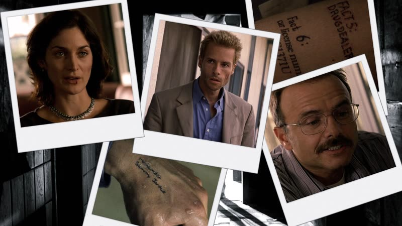
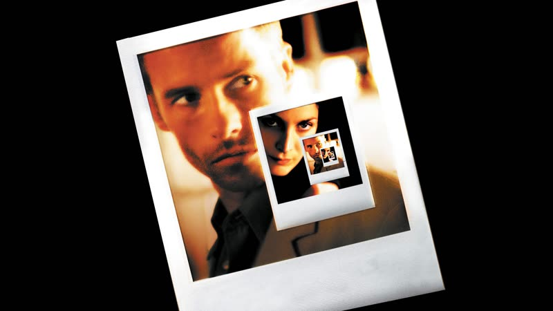
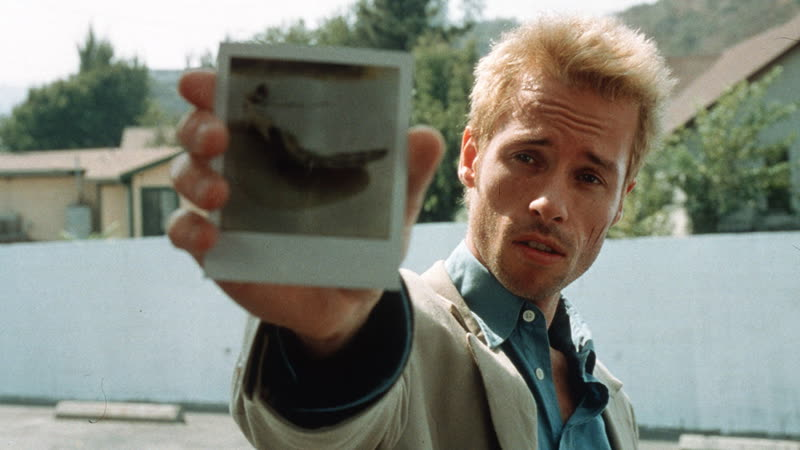
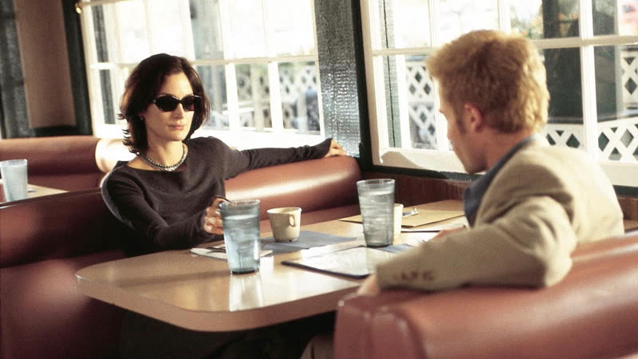
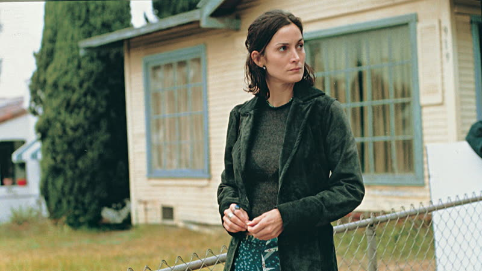

2000
Memento
A man who cannot make new memories hunts his wife's killer, and the film makes you share his confusion by telling the hunt backwards.
How it plays with time
Two strands are cut together. The colour scenes run in reverse order, each overlapping briefly with the one before it in the film, so the audience meets effects before causes. The black-and-white scenes run forwards, and the two strands join at the very end when a Polaroid develops and the picture turns from black and white to colour. source
Themes
- Memory
- Leonard cannot hold onto anything new, so he relies on Polaroids, scribbled notes and tattoos as his memory. The film keeps showing that these records are only as trustworthy as whoever made them, and that he is the one who made them. source
- Time
- The opening plays a Polaroid un-developing, a gunshot undone and a body restored. From there the story moves away from its own ending, putting the audience in Leonard's position of arriving mid-scene with no idea how it got there. source
- Deception
- Near the end Teddy tells Leonard what has really happened. Leonard chooses not to keep that knowledge and writes himself a note that sends his future self after Teddy. He deceives himself on purpose, so the hunt can go on. source
- Grief
- Leonard's purpose is built on the death of his wife. Because he cannot move forward, his mourning has no end, and his revenge can be restarted again and again without the hunt ever concluding. source
- Guilt
- The film slowly suggests Leonard played a part in his wife's death. Choosing to forget that and keep hunting someone else is his way of avoiding it. source
Where it came from
- Nolan says the film grew out of a street fight he saw in Camden as a student, a moment he remembers emotionally. He and his brother Jonathan disagree about whether Jonathan was there, which Nolan ties to the film's subject of unreliable memory. Nolan
It was one of those moments that you really remember emotionally.
source - Nolan credits Graham Swift's 1983 novel Waterland with sparking his interest in experimenting with narrative form. Nolan source
- Jonathan Nolan wrote the short story "Memento Mori" that the film is based on; the screenplay is Christopher's. The search result giving a cross-country road-trip origin came via Wikipedia and was not fetched tonight, so treat it as unverified. Jonathan Nolan source
- The Film Stage says the production drew on Double Indemnity, aiming for a realistic design, and that Nolan sketches the subjective and objective story threads on a chalkboard in a conversation about the film. Nolan source
Stills





Stills © their studios, used here for commentary and criticism.
People who keep coming back
- Wally Pfister, Cinematographer: also insomnia, batman begins, the prestige, the dark knight, inception, the dark knight rises
- Dody Dorn, Editor: also insomnia
- David Julyan, Composer: also following, insomnia, the prestige
- Jonathan Nolan, Author of the source short story: also the prestige, the dark knight, the dark knight rises, interstellar
- Mark Boone Junior, Actor (Burt): also batman begins, the dark knight
How it was received
Critics rated it very highly, with Metacritic reporting universal acclaim, and praised how the reversed structure mirrored the hero's condition. A small independent release, it grew into a wider hit. Wikipedia gives no as-of date for the aggregate scores. Metacritic 83 source. Rotten Tomatoes 93% source.
Viewers still talk about it as a puzzle-box landmark; Letterboxd reviewers praise the structure and the feeling of being as confused as Leonard, and the page shows about 58,000 fans. The average rating was not returned in the fetch or by search (unverified).
Three things most people miss
- The colour scenes overlap slightly at their joins, so the audience can tell they are running in reverse. The black-and-white and colour strands then meet exactly once, when a developing Polaroid turns the picture to colour. source
- The 2002 limited-edition DVD hid a chronological cut of the film behind an interactive puzzle of memory questions on its second disc. source
- The origin story is itself a memory dispute: Jonathan believes he was present at the Camden fight and Christopher doubts it, which fits the film's subject neatly. source
Cast
Guy Pearce as Leonard Shelby; Carrie-Anne Moss as Natalie; Joe Pantoliano as John Edward "Teddy" Gammell; Mark Boone Junior as Burt; Russ Fega as Waiter.